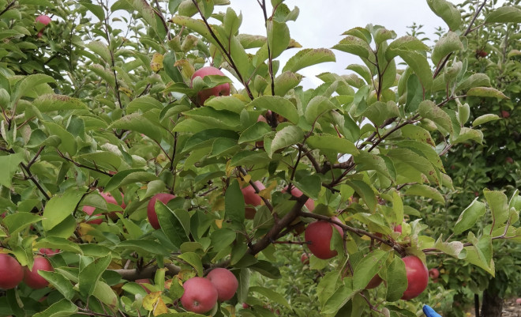

今年，多伦多附近及安省各地的果园早早就开始采摘苹果了。

无论您是想直接从树上摘下一些来吃，还是收集新鲜苹果派的配料，多伦多附近的果园都可以让您参与到夏末采摘苹果的活动。
虽然目前正值桃子和玉米的旺季，但今年夏天异常炎热，这意味着苹果树正急切地进入生长果实的早期阶段，这意味着人们可以自己采摘苹果的机会已经到来。
Hamilton的The Apple Orchard果园现已开放Paula Red苹果的采摘，您还可以在参观期间采摘一些树莓（覆盆子）和向日葵。
农场门票成人11加元，儿童10加元，苹果每磅2.25加元。您还可以乘坐包含在门票价格中的免费马车。
Stouffville的Applewood农场计划于8月31日（周六）向公众开放果园，您可以以20加元的价格买到一袋10磅的新鲜水果，外加12加元的农场入场费。
另一个典型的夏末体验是，他们还于8月5日（周一）开放了向日葵田，因此您可以在社交平台上发布阳光灿烂、金黄的照片。
Milton的Chudleigh娱乐农场也将于8月15日提前开放果园，提供18多种不同品种的苹果，这些苹果将在整个季节的不同时间供应。
本季的第一批苹果是Sunrise，其他品种如Ginger Gold、Wealthy和Silken将在本月内成熟。
Caldon的Dixie Orchards果园在秋季还提供南瓜和榛子采摘，8月24日会开放摘苹果，采摘的早熟品种包括Sunrise、Ginger Gold、Paula Red和Bubblegum。
人们可以现场买票进入，但农场建议您提前预订门票（尤其是周末），现在可以通过其网站以6加元的价格购票。
为了让您品尝到一些有机食品，万锦的Organics Family Farm农场将于8月22日开始他们的采摘季，今年夏天早些时候草莓和树莓的收获也颇丰。
他们的早熟品种有Pristine、Ginger Gold、Red Free和 Sunrise，您可以支付16加元的入场费，免费获得一袋5磅的苹果。额外的5磅袋需再支付12加元，10 磅一袋的价格是24加元。
从8月13日起，您也可以在King City的Pine Farms Orchard果园开始采摘Melba苹果，每磅2.35加元，另加10加元入场费。
他们只接受现场买票，并且偶尔会在农场达到容量时关门，因此请提前到达以挑选最好的苹果。